<!doctype html>
<html lang="pt-BR">
<head>
<meta charset="utf-8">
<meta name="viewport" content="width=device-width, initial-scale=1">
<title>Daniel Medeiros · Jornada reversa</title>
<link rel="preconnect" href="https://fonts.googleapis.com">
<link href="https://fonts.googleapis.com/css2?family=Manrope:wght@400;500;600;700;800&amp;family=Libre+Caslon+Text:ital,wght@0,400;0,700;1,400&amp;family=IBM+Plex+Mono:wght@400;500&amp;display=swap" rel="stylesheet">
<link rel="stylesheet" href="css/home.css">
</head>
<body>
<div id="app"></div>
<script type="text/template" id="dm-tpl">

<div class="dm-root {{langCls}}" id="topo" style="font-family: 'Manrope', system-ui, sans-serif; background: {{pal.bg}}; color: {{pal.ink}}; transition: background-color .6s ease, color .6s ease; {{shell}}">

<header style="position: sticky; top: 0; z-index: 10; background: {{pal.hdr}}; border-bottom: 1px solid {{pal.line}}; backdrop-filter: blur(10px); transition: background-color .6s ease, border-color .6s ease">
<div class="dm-hdr" style="max-width: 1440px; margin: 0 auto; padding: 14px clamp(16px, 4cqi, 48px); display: flex; flex-wrap: wrap; align-items: center; justify-content: space-between; gap: 8px 32px; min-height: 44px">
<a href="#inicio" style="text-decoration: none; display: flex; align-items: baseline; gap: 10px; font-weight: 800; font-size: 18px; letter-spacing: -0.01em">Daniel Medeiros<span class="dm-tag" style="font-family: 'IBM Plex Mono', monospace; font-weight: 400; font-size: 12px; color: {{pal.muted}}"><span class="dm-pt">UX · Product · Management</span><span class="dm-en">UX · Product · Management</span></span></a>
<div class="dm-hright" style="display: flex; align-items: center; gap: 4px">
<nav aria-label="{{tx.main}}" class="dm-navlinks" style="display: flex; gap: 4px; font-size: 14px; font-weight: 600">
<a href="#inicio" class="dm-navlink" aria-current="page" style="color: #2747C9; background: #EEF1F6"><svg aria-hidden="true" width="20" height="20" viewBox="0 0 24 24" fill="none" stroke="currentColor" stroke-width="1.8" stroke-linecap="round" stroke-linejoin="round"><circle cx="6" cy="19" r="2"></circle><circle cx="18" cy="5" r="2"></circle><path d="M8 19h8.5a3.5 3.5 0 0 0 0-7h-9a3.5 3.5 0 0 1 0-7H16"></path></svg><span class="dm-navtxt"><span class="dm-pt">Jornada</span><span class="dm-en">Journey</span></span></a>
<a href="{{links.bio}}" class="dm-navlink" style="color: #11151C"><svg aria-hidden="true" width="20" height="20" viewBox="0 0 24 24" fill="none" stroke="currentColor" stroke-width="1.8" stroke-linecap="round" stroke-linejoin="round"><circle cx="12" cy="8" r="4"></circle><path d="M4 21c0-4 3.6-6 8-6s8 2 8 6"></path></svg><span class="dm-navtxt"><span class="dm-pt">Biografia</span><span class="dm-en">Biography</span></span></a>
<a href="{{links.exp}}" class="dm-navlink" style="color: #11151C"><svg aria-hidden="true" width="20" height="20" viewBox="0 0 24 24" fill="none" stroke="currentColor" stroke-width="1.8" stroke-linecap="round" stroke-linejoin="round"><rect x="3" y="7" width="18" height="13" rx="2"></rect><path d="M8 7V5a2 2 0 0 1 2-2h4a2 2 0 0 1 2 2v2"></path><path d="M3 13h18"></path></svg><span class="dm-navtxt"><span class="dm-pt">Experiência profissional</span><span class="dm-en">Work experience</span></span></a>
<a href="{{links.form}}" class="dm-navlink" style="color: #11151C"><svg aria-hidden="true" width="20" height="20" viewBox="0 0 24 24" fill="none" stroke="currentColor" stroke-width="1.8" stroke-linecap="round" stroke-linejoin="round"><path d="M2 9l10-5 10 5-10 5z"></path><path d="M6 11v5c0 1.5 2.7 3 6 3s6-1.5 6-3v-5"></path></svg><span class="dm-navtxt"><span class="dm-pt">Formação acadêmica</span><span class="dm-en">Education</span></span></a>
</nav>
<div class="dm-lang" role="group" aria-label="{{tx.lang}}"><button type="button" data-lang="pt" aria-pressed="{{lp.pt}}" aria-label="Português" style="color: {{lp.ptColor}}; font-weight: {{lp.ptWeight}}">PT</button><span class="dm-langsep" aria-hidden="true" style="color: #C9D0DC">|</span><button type="button" data-lang="en" aria-pressed="{{lp.en}}" aria-label="English" style="color: {{lp.enColor}}; font-weight: {{lp.enWeight}}">EN</button></div>
</div>
</div>
</header>
<div class="dm-hstep" style="position: sticky; top: 65px; z-index: 9; background: rgba(255,255,255,0.96); border-bottom: 1px solid #DDE2EA; padding: 2px 16px 10px">
<nav aria-label="{{tx.journey}}" style="position: relative">
<div aria-hidden="true" style="position: absolute; left: {{hstart}}; right: {{hstart}}; top: 21px; height: 2px; background: #DDE2EA"></div>
<div aria-hidden="true" style="position: absolute; left: {{hstart}}; top: 21px; height: 2px; width: {{hfill}}; background: #2747C9; transition: width .2s linear"></div>
<ol style="list-style: none; margin: 0; padding: 0; position: relative; display: grid; grid-template-columns: repeat(8, minmax(0, 1fr))">
<sc-for list="{{hsteps}}" as="h" hint-placeholder-count="8">
<li style="display: flex; justify-content: center"><a href="{{h.href}}" aria-label="{{h.aria}}" style="display: flex; align-items: center; justify-content: center; width: 100%; height: 44px"><span aria-hidden="true" style="display: block; width: {{h.size}}; height: {{h.size}}; border-radius: 50%; box-sizing: border-box; border: 2px solid {{h.ring}}; background: {{h.fill}}; transition: all .25s ease"></span></a></li>
</sc-for>
</ol>
<div style="position: relative; height: 18px">
<span style="position: absolute; top: 0; left: {{hl.left}}; transform: {{hl.tx}}; white-space: nowrap; font-family: 'IBM Plex Mono', monospace; font-size: 12px; font-weight: 500; color: #2747C9">{{hl.text}}</span>
</div>
</nav>
</div>

<div class="dm-layout" style="max-width: 1440px; margin: 0 auto; {{scroll}}">

<aside aria-label="{{tx.journey}}" style="position: relative">
<div class="dm-stick" style="padding: 48px 0 32px clamp(10px, 3cqi, 48px)">
<p class="dm-st-text" style="margin: 0 0 20px; font-family: 'IBM Plex Mono', monospace; font-size: 11px; letter-spacing: .12em; text-transform: uppercase; color: {{pal.muted}}"><span class="dm-pt">Jornada reversa</span><span class="dm-en">Reverse journey</span></p>
<div style="position: relative">
<div aria-hidden="true" style="position: absolute; left: 7px; top: 8px; bottom: 8px; width: 2px; background: {{pal.line}}"></div>
<div aria-hidden="true" style="position: absolute; left: 7px; top: 22px; width: 2px; height: calc((100% - 44px) * {{progf}}); background: {{pal.accent}}; transition: height .2s linear, background-color .6s ease"></div>
<ol style="list-style: none; margin: 0; padding: 0; display: flex; flex-direction: column; gap: 6px; position: relative">
<sc-for list="{{steps}}" as="step" hint-placeholder-count="7">
<li>
<a href="{{step.href}}" aria-label="{{step.aria}}" style="display: flex; align-items: center; gap: 14px; min-height: 44px; text-decoration: none">
<span aria-hidden="true" style="flex: none; width: 16px; height: 16px; border-radius: 50%; box-sizing: border-box; border: 2px solid {{step.ring}}; background: {{step.fill}}; transition: all .3s ease"></span>
<span class="dm-st-text" style="display: flex; flex-direction: column; line-height: 1.2">
<span style="font-family: 'IBM Plex Mono', monospace; font-size: 12px; color: {{step.yearColor}}">{{step.year}}</span>
<span style="font-size: 14px; font-weight: {{step.weight}}; color: {{step.labelColor}}">{{step.label}}</span>
</span>
</a>
</li>
</sc-for>
</ol>
</div>
</div>
</aside>

<main style="min-width: 0">
<span id="inicio" style="display: block; height: 0"></span>

<section id="cap-hoje" data-chapter="0" style="background: #FFFFFF; color: #11151C; padding: 48px clamp(16px, 5cqi, 80px) clamp(64px, 8cqi, 128px) clamp(12px, 3cqi, 40px)">
<div class="dm-hintrow" style="margin: 0 0 20px; display: flex; flex-wrap: wrap; align-items: baseline; justify-content: space-between; gap: 8px 24px">
<p style="margin: 0; font-family: 'IBM Plex Mono', monospace; font-size: 12px; letter-spacing: .12em; text-transform: uppercase; color: #4A5363"><span class="dm-pt">Hoje · Ânima Educação</span><span class="dm-en">Today · Ânima Educação</span></p>
<p style="margin: 0; font-size: 15px; font-weight: 600; color: #4A5363"><span class="dm-pt">Role para voltar no tempo ↓</span><span class="dm-en">Scroll to go back in time ↓</span></p>
</div>
<h1 style="margin: 0 0 28px; font-size: clamp(30px, 4.4cqi, 56px); line-height: 1.08; letter-spacing: -0.025em; font-weight: 800; max-width: 20ch"><span class="dm-pt">Hoje eu sou Product Designer/Owner, unindo UX, UI e gestão de produto.</span><span class="dm-en">Today I am a Product Designer/Owner, combining UX, UI and product management.</span></h1>
<div>
<div style="display: flex; flex-direction: column; gap: 20px; max-width: 760px">
<p style="margin: 0; font-size: 18px; line-height: 1.6; color: #2A303B"><span class="dm-pt">Sou Product Designer/Owner em um dos times da Ânima Educação que cuidam do desenvolvimento dos produtos e plataformas digitais da companhia. Reúno as duas frentes: o olhar de UX/UI Designer segue presente na forma como conduzo o produto.</span><span class="dm-en">I am a Product Designer/Owner in one of the teams at Ânima Educação that develop the company’s digital products and platforms. I combine both fronts: my UX/UI Design perspective still shapes how I run the product.</span></p>
<p style="margin: 0; font-size: 18px; line-height: 1.6; color: #2A303B"><span class="dm-pt">Escrevo User Stories, conduzo as reuniões com o time, homologo cards no Azure DevOps e tomo as decisões de produto junto ao time. Do design, mantenho a prototipação, os testes com usuários e os arquivos de handoff. Também uso inteligência artificial nos processos e fluxos de trabalho do dia a dia, com ferramentas como Figma Make, Copilot e Claude.</span><span class="dm-en">I write User Stories, lead team meetings, sign off cards in Azure DevOps and make product decisions together with the team. From design, I keep prototyping, user testing and handoff files. I also use artificial intelligence in my everyday processes and workflows, with tools such as Figma Make, Copilot and Claude.</span></p>
<p style="margin: 0; font-size: 18px; line-height: 1.6; color: #2A303B"><span class="dm-pt">É assim que eu vejo quem trabalha com produto e tecnologia digital hoje: não um cargo de uma competência só, mas um mix de competências técnicas entre design e produto.</span><span class="dm-en">That is how I see anyone working in product and digital technology today: not a single-skill role, but a mix of technical skills spanning design and product.</span></p>
<ul aria-label="{{tx.comp}}" style="list-style: none; margin: 8px 0 0; padding: 0; display: flex; flex-wrap: wrap; gap: 8px; font-size: 13px; font-weight: 600">
<li style="padding: 7px 12px; border-radius: 999px; border: 1px solid #C9D0DC">User Stories</li>
<li style="padding: 7px 12px; border-radius: 999px; border: 1px solid #C9D0DC"><span class="dm-pt">Homologação no Azure DevOps</span><span class="dm-en">Acceptance in Azure DevOps</span></li>
<li style="padding: 7px 12px; border-radius: 999px; border: 1px solid #C9D0DC"><span class="dm-pt">Condução de reuniões</span><span class="dm-en">Meeting facilitation</span></li>
<li style="padding: 7px 12px; border-radius: 999px; border: 1px solid #C9D0DC"><span class="dm-pt">Decisões de produto</span><span class="dm-en">Product decisions</span></li>
<li style="padding: 7px 12px; border-radius: 999px; border: 1px solid #C9D0DC"><span class="dm-pt">Prototipação e testes</span><span class="dm-en">Prototyping and testing</span></li>
<li style="padding: 7px 12px; border-radius: 999px; border: 1px solid #C9D0DC">Handoff</li>
<li style="padding: 7px 12px; border-radius: 999px; border: 1px solid #C9D0DC"><span class="dm-pt">IA no fluxo de trabalho</span><span class="dm-en">AI in the workflow</span></li>
</ul>
</div>
<div style="margin-top: 56px">
<ul class="dm-cards2" style="list-style: none; margin: 0; padding: 0; gap: 40px 32px">
<li style="display: flex; flex-direction: column; gap: 12px">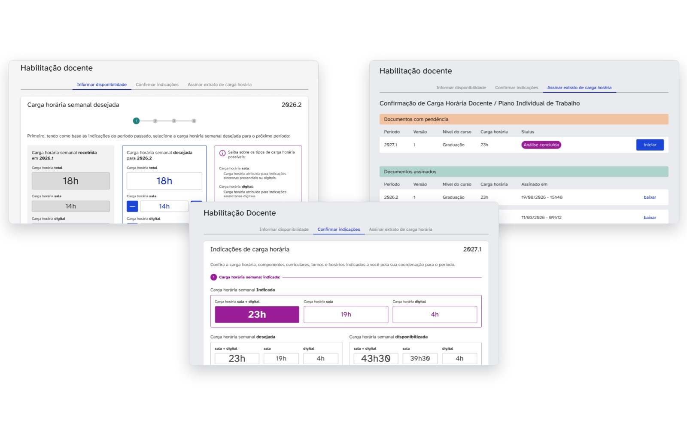<h3 style="margin: 0; font-size: 20px; font-weight: 700"><span class="dm-pt">Jornada de habilitação docente</span><span class="dm-en">Teacher qualification journey</span></h3><p style="margin: 0; font-size: 15px; line-height: 1.55; color: #4A5363"><span class="dm-pt">Unificação sistêmica e operacional da atribuição de aulas aos docentes, em três etapas, com participação ativa de todos os atores do processo e integração com sistemas parceiros.</span><span class="dm-en">A systemic and operational unification of how classes are assigned to teachers, in three stages, with every stakeholder actively involved and integration with partner systems.</span></p>
<p style="margin: 0; font-size: 15px; line-height: 1.55; color: #4A5363"><span class="dm-pt">O produto organiza e documenta o fluxo de atribuição dos componentes curriculares, com rastreabilidade e poder de decisão para os stakeholders. Tem como objetivos estratégicos aproveitar melhor o quadro de funcionários, melhorar a oferta de disciplinas e evitar gastos trabalhistas excessivos.</span><span class="dm-en">The product organizes and documents the flow of course assignments, with traceability and decision power for stakeholders. Its strategic goals are to make better use of the staff, improve course offerings and avoid excessive labor costs.</span></p>
<p style="margin: 0; font-size: 15px; line-height: 1.55; color: #4A5363"><span class="dm-pt">Quando implementada, a primeira etapa atingiu mais de 90% de top two box na avaliação de CSAT, com adesão expressiva de respondentes.</span><span class="dm-en">When launched, the first stage reached a CSAT top-two-box score above 90%, with a strong response rate.</span></p></li>
<li style="display: flex; flex-direction: column; gap: 12px">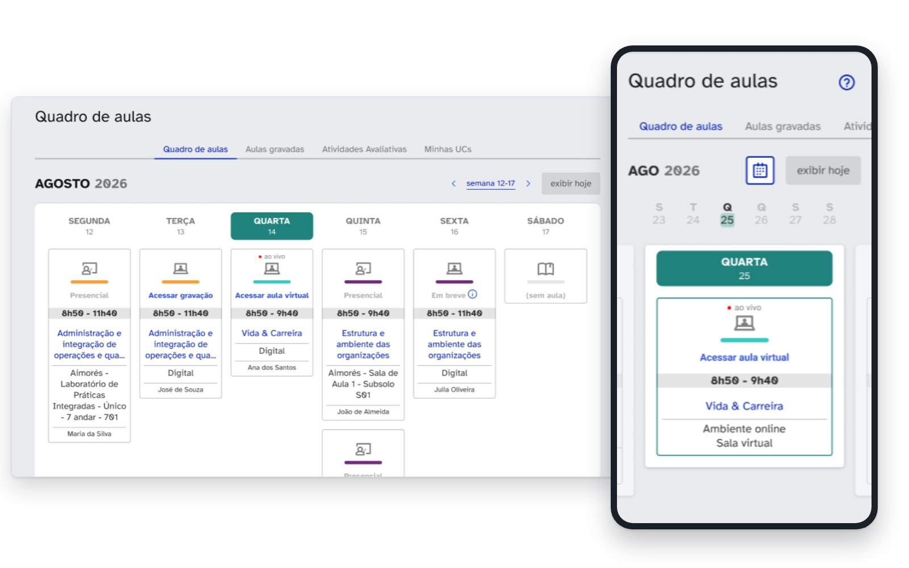<h3 style="margin: 0; font-size: 20px; font-weight: 700"><span class="dm-pt">Quadro de aulas</span><span class="dm-en">Class schedule</span></h3><p style="margin: 0; font-size: 15px; line-height: 1.55; color: #4A5363"><span class="dm-pt">Funcionalidade no app e no site das instituições para exibir e organizar a grade de horários de estudantes e professores, bem como direcionar para os links de aulas e materiais de estudos. É uma das funcionalidades mais acessadas do Ulife, com mais de 300 mil usuários anualmente, entre alunos e professores.</span><span class="dm-en">A feature in the institutions’ app and website that displays and organizes the timetables of students and teachers, and links to class sessions and study materials. It is one of the most-used features of Ulife, with more than 300,000 users every year, including students and teachers.</span></p></li>
</ul>
</div>
</div>
</section>

<section id="cap-anima" data-chapter="1" style="background: #F7F8FA; color: #11151C; padding: clamp(64px, 8cqi, 128px) clamp(16px, 5cqi, 80px) clamp(64px, 8cqi, 128px) clamp(12px, 3cqi, 40px)">
<p style="margin: 0 0 20px; font-family: 'IBM Plex Mono', monospace; font-size: 12px; letter-spacing: .12em; text-transform: uppercase; color: #4A5363"><span class="dm-pt">2022 · Chegada à Ânima</span><span class="dm-en">2022 · Joining Ânima</span></p>
<h2 style="margin: 0 0 28px; font-size: clamp(30px, 4.4cqi, 56px); line-height: 1.08; letter-spacing: -0.025em; font-weight: 800; max-width: 20ch"><span class="dm-pt">Mas antes, eu entrei na Ânima como UX Designer e precisava entender os produtos e processos.</span><span class="dm-en">But first, I joined Ânima as a UX Designer and needed to understand its products and processes.</span></h2>
<div style="display: flex; flex-direction: column; gap: 20px; max-width: 760px">
<p style="margin: 0; font-size: 18px; line-height: 1.6; color: #2A303B"><span class="dm-pt">Fui designado para times que atuavam em operações complexas, com processos manuais, sistemas pouco integrados e uma linguagem técnica própria. Para desenhar bem, primeiro eu tinha que entender: mapeei fluxos, desenhei blueprints, organizei o que ouvia do time técnico e encontrei gargalos que viraram oportunidades de automação.</span><span class="dm-en">I was assigned to teams working on complex operations, with manual processes, poorly integrated systems and a technical language of their own. To design well, I first had to understand: I mapped flows, drew blueprints, organized what I heard from the technical team and found bottlenecks that became automation opportunities.</span></p>
<ul aria-label="{{tx.comp}}" style="list-style: none; margin: 8px 0 0; padding: 0; display: flex; flex-wrap: wrap; gap: 8px; font-size: 13px; font-weight: 600">
<li style="padding: 7px 12px; border-radius: 999px; border: 1px solid #C9D0DC"><span class="dm-pt">Mapeamento de fluxos</span><span class="dm-en">Flow mapping</span></li>
<li style="padding: 7px 12px; border-radius: 999px; border: 1px solid #C9D0DC">Service blueprint</li>
<li style="padding: 7px 12px; border-radius: 999px; border: 1px solid #C9D0DC"><span class="dm-pt">Arquitetura de sistemas</span><span class="dm-en">Systems architecture</span></li>
<li style="padding: 7px 12px; border-radius: 999px; border: 1px solid #C9D0DC"><span class="dm-pt">Análise de volumetria</span><span class="dm-en">Volume analysis</span></li>
<li style="padding: 7px 12px; border-radius: 999px; border: 1px solid #C9D0DC"><span class="dm-pt">Wireframes e protótipos</span><span class="dm-en">Wireframes and prototypes</span></li>
</ul>
</div>
<div class="dm-cards2" style="margin-top: 56px">
<article style="display: flex; flex-direction: column; gap: 12px">
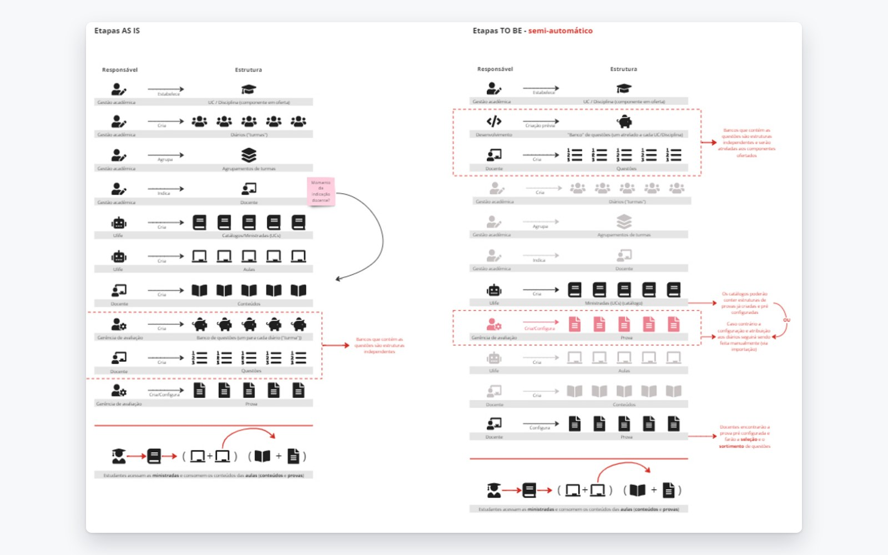
<h3 style="margin: 0; font-size: 18px; font-weight: 700"><span class="dm-pt">Unificação de bancos de questões para configuração de provas</span><span class="dm-en">Unifying question banks for exam setup</span></h3>
<p style="margin: 0; font-size: 15px; line-height: 1.55; color: #4A5363"><span class="dm-pt">Estruturação do fluxo de criação e configuração de provas para identificar gargalos e oportunidades de melhorias no processo.</span><span class="dm-en">Structuring the exam creation and setup flow to identify bottlenecks and opportunities to improve the process.</span></p>
<p class="dm-note" style="margin: 4px 0 0; padding-left: 14px; border-left: 2px solid #C9D0DC; font-size: 15px; line-height: 1.6; font-style: italic; color: #2A303B"><span class="dm-pt">“A entrega final foi uma versão melhorada da tela, simples, de cadastro de questões. O ganho maior no processo se deu quando, ao mapear a sequência de ações e responsáveis no fluxo, percebeu-se grande relação de dependência às etapas anteriores de criação e configuração de componentes. Decidiu-se que os bancos de questões poderiam ser unificados e a etapa de cadastro e configuração de provas se tornaria independente das demais, ampliando o prazo de atuação dos stakeholders e aumentando a segurança e assertividade da entrega.”</span><span class="dm-en">“The final delivery was an improved version of the simple question-entry screen. The biggest process gain came when, mapping the sequence of actions and owners in the flow, we saw a strong dependency on the earlier steps of creating and setting up components. We decided the question banks could be unified and the exam entry and setup step would become independent of the others, giving stakeholders a longer window to act and making delivery safer and more accurate.”</span></p>
</article>
<article style="display: flex; flex-direction: column; gap: 12px">
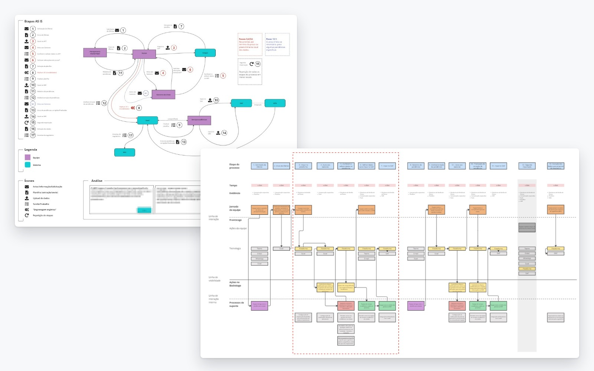
<h3 style="margin: 0; font-size: 18px; font-weight: 700"><span class="dm-pt">Cadastro e edição de planos de ensino</span><span class="dm-en">Creating and editing course plans</span></h3>
<p style="margin: 0; font-size: 15px; line-height: 1.55; color: #4A5363"><span class="dm-pt">Mapeamento de um fluxo confuso, descentralizado e em grande parte manual. Foi preciso organizar o estudo visual das etapas, para um novo desenho, simplificado, e esquematização de um blueprint do serviço para organizar o desenvolvimento do produto final.</span><span class="dm-en">Mapping a confusing, decentralized and largely manual flow. It took a visual study of the steps, leading to a new, simplified design and a service blueprint to organize the development of the final product.</span></p>
<p class="dm-note" style="margin: 4px 0 0; padding-left: 14px; border-left: 2px solid #C9D0DC; font-size: 15px; line-height: 1.6; font-style: italic; color: #2A303B"><span class="dm-pt">“Existia um produto, não integrado aos sistemas, que formatava os planos. O desenvolvimento de uma nova versão deste produto foi a entrega final. Minha atuação chave, para além do desenvolvimento do protótipo e auxílio na escrita das histórias, foi ajudar a exemplificar os ganhos processuais da integração deste novo produto, reduzindo etapas e mitigando riscos do processo antigo.”</span><span class="dm-en">“There was a product, not integrated with the systems, that formatted the plans. Developing a new version of it was the final delivery. My key contribution, beyond building the prototype and helping write the user stories, was showing the process gains of integrating this new product, cutting steps and mitigating the risks of the old process.”</span></p>
</article>
<article style="display: flex; flex-direction: column; gap: 12px">
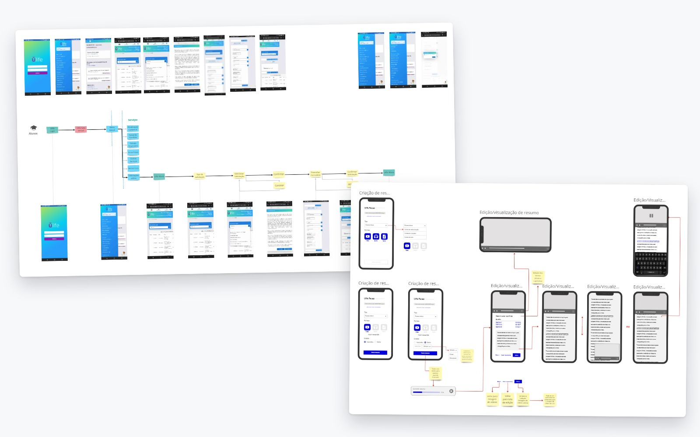
<h3 style="margin: 0; font-size: 18px; font-weight: 700"><span class="dm-pt">Melhoria do fluxo de abertura de chamados</span><span class="dm-en">Improving the support ticket flow</span></h3>
<p style="margin: 0; font-size: 15px; line-height: 1.55; color: #4A5363"><span class="dm-pt">Atividade exploratória em treinamento de grupo: estudo de volumetria e separação de chamados por assunto, mapeamento da interface atual, rascunhos à mão das novas telas, wireframe e protótipo final.</span><span class="dm-en">An exploratory group training exercise: volume study and grouping of tickets by subject, mapping of the current interface, hand sketches of the new screens, wireframe and final prototype.</span></p>
<p class="dm-note" style="margin: 4px 0 0; padding-left: 14px; border-left: 2px solid #C9D0DC; font-size: 15px; line-height: 1.6; font-style: italic; color: #2A303B"><span class="dm-pt">“A atividade fez parte de um “laboratório de UX” promovido internamente, como uma iniciativa de “onboarding” e treinamento profissional. Serviu como trabalho “acadêmico” e estudo interno para correções, ajustes e melhorias futuras do processo.”</span><span class="dm-en">“The activity was part of an internal “UX lab”, an onboarding and professional training initiative. It worked as an “academic” exercise and an internal study for future fixes, adjustments and improvements to the process.”</span></p>
</article>
</div>
</section>

<section id="cap-mba" data-chapter="2" style="background: #FFFFFF; color: #11151C; padding: clamp(64px, 8cqi, 128px) clamp(16px, 5cqi, 80px) clamp(64px, 8cqi, 128px) clamp(12px, 3cqi, 40px)">
<p style="margin: 0 0 20px; font-family: 'IBM Plex Mono', monospace; font-size: 12px; letter-spacing: .12em; text-transform: uppercase; color: #4A5363">2020–2021 · FIAP</p>
<h2 style="margin: 0 0 28px; font-size: clamp(30px, 4.4cqi, 56px); line-height: 1.08; letter-spacing: -0.025em; font-weight: 800; max-width: 20ch"><span class="dm-pt">E eu me credenciei para a vaga de UX com um MBA em UX Design &amp; Strategy.</span><span class="dm-en">And I earned the UX role with an MBA in UX Design &amp; Strategy.</span></h2>
<div class="dm-split">
<div style="display: flex; flex-direction: column; gap: 20px">
<p style="margin: 0; font-size: 18px; line-height: 1.6; color: #2A303B"><span class="dm-pt">A profissão de designer estava mudando, e a programação visual sozinha já não bastava. Ao trabalhar ao lado de especialistas em Usabilidade, percebi que seria válido investir numa formação adicional à de designer gráfico, para melhor atuar com projetos digitais.</span><span class="dm-en">The design profession was changing, and visual design alone was no longer enough. Working alongside usability specialists, I realized it was worth investing in training beyond graphic design, to work better on digital projects.</span></p>
<p style="margin: 0; font-size: 18px; line-height: 1.6; color: #2A303B"><span class="dm-pt">Inicialmente me inscrevi num MBA do Instituto Infnet, no Rio de Janeiro, mas precisei encerrá-lo e recomecei os estudos na FIAP, após me mudar para São Paulo em 2019.</span><span class="dm-en">I first enrolled in an MBA at Instituto Infnet in Rio de Janeiro, but had to leave it and started over at FIAP after moving to São Paulo in 2019.</span></p>
<p style="margin: 0; font-size: 18px; line-height: 1.6; color: #2A303B"><span class="dm-pt">A formação envolveu a execução de projetos como o “Calmei”, trabalho feito em dupla, sobre a criação de um aplicativo de saúde mental, e o “Vida Plena Saúde”, projeto multidisciplinar sobre o fluxo de um serviço de agendamento de consultas online, com blueprint, fluxograma e mockups de telas.</span><span class="dm-en">The program involved projects such as “Calmei”, a project done in pairs, on creating a mental health app, and “Vida Plena Saúde”, a multidisciplinary project on the flow of an online medical appointment booking service, with a service blueprint, flowchart and screen mockups.</span></p>
<ul aria-label="{{tx.comp}}" style="list-style: none; margin: 8px 0 0; padding: 0; display: flex; flex-wrap: wrap; gap: 8px; font-size: 13px; font-weight: 600">
<li style="padding: 7px 12px; border-radius: 999px; border: 1px solid #C9D0DC">UX Strategy</li>
<li style="padding: 7px 12px; border-radius: 999px; border: 1px solid #C9D0DC">Design Thinking</li>
<li style="padding: 7px 12px; border-radius: 999px; border: 1px solid #C9D0DC"><span class="dm-pt">Arquitetura de informação</span><span class="dm-en">Information architecture</span></li>
<li style="padding: 7px 12px; border-radius: 999px; border: 1px solid #C9D0DC"><span class="dm-pt">Métricas de experiência</span><span class="dm-en">Experience metrics</span></li>
</ul>
</div>
<div style="display: flex; flex-direction: column; gap: 24px"><figure style="margin: 0; display: flex; flex-direction: column; gap: 10px">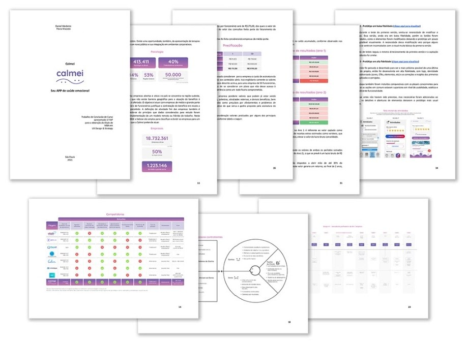<figcaption style="margin: 0; font-family: 'Manrope', sans-serif; font-size: 13px; line-height: 1.4; color: #4A5363"><span class="dm-pt">Trabalho de conclusão do “Calmei”: pesquisa de mercado, precificação, análise de concorrentes, mapa de empatia e protótipos.</span><span class="dm-en">“Calmei” final project: market research, pricing, competitor analysis, empathy map and prototypes.</span></figcaption></figure><figure style="margin: 0; display: flex; flex-direction: column; gap: 10px">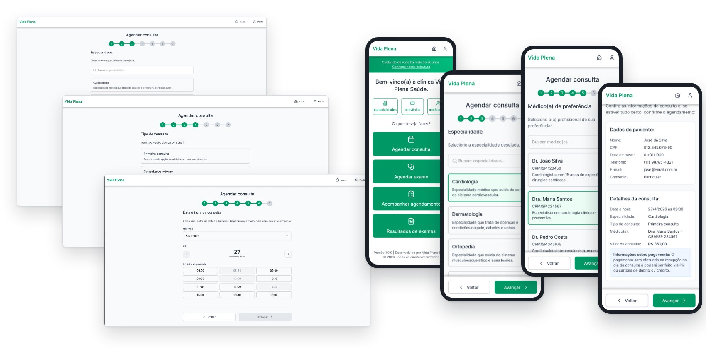<figcaption style="margin: 0; font-family: 'Manrope', sans-serif; font-size: 13px; line-height: 1.4; color: #4A5363"><span class="dm-pt">Projeto “Vida Plena Saúde”: mockups das telas desktop e mobile do fluxo de agendamento de consultas online.</span><span class="dm-en">“Vida Plena Saúde” project: desktop and mobile screen mockups of the online appointment booking flow.</span></figcaption></figure></div>
</div>
</section>

<section id="cap-fiocruz" data-chapter="3" style="background: #F7F8FA; color: #11151C; padding: clamp(64px, 8cqi, 128px) clamp(16px, 5cqi, 80px) clamp(64px, 8cqi, 128px) clamp(12px, 3cqi, 40px)">
<p style="margin: 0 0 20px; font-family: 'IBM Plex Mono', monospace; font-size: 12px; letter-spacing: .12em; text-transform: uppercase; color: #4A5363">2014–2019 · ENSP / Fiocruz</p>
<h2 style="margin: 0 0 28px; font-size: clamp(30px, 4.4cqi, 56px); line-height: 1.08; letter-spacing: -0.025em; font-weight: 800; max-width: 20ch"><span class="dm-pt">Antes disso, eu desenhava projetos gráficos e produtos responsivos em HTML na Escola Nacional de Saúde Pública.</span><span class="dm-en">Before that, I designed graphic projects and responsive HTML products at the National School of Public Health.</span></h2>
<div class="dm-split">
<div style="display: flex; flex-direction: column; gap: 20px">
<p style="margin: 0; font-size: 18px; line-height: 1.6; color: #2A303B"><span class="dm-pt">Por quase seis anos, fiz parte da equipe multidisciplinar da CDEAD, o braço de educação a distância da ENSP/Fiocruz. Criei identidades visuais, diagramação, ilustrações e materiais digitais em HTML5, sempre junto às equipes de pedagogia e design instrucional. A ordem era produzir materiais cada vez mais responsivos e acessíveis, e converter os antigos para esse novo formato.</span><span class="dm-en">For almost six years, I was part of the multidisciplinary team at CDEAD, the distance learning branch of ENSP/Fiocruz. I created visual identities, layouts, illustrations and digital materials in HTML5, always together with the pedagogy and instructional design teams. The goal was to produce ever more responsive and accessible materials, and to convert older ones to this new format.</span></p>
<p style="margin: 0; font-size: 18px; line-height: 1.6; color: #2A303B"><span class="dm-pt">Também participei de grupos de estudo sobre jogos educativos, acessibilidade e transferência de tecnologia em parceria com universidades públicas. E, no mesmo período, voltei para a universidade.</span><span class="dm-en">I also took part in study groups on educational games, accessibility and technology transfer in partnership with public universities. And, during the same period, I went back to university.</span></p>
<ul aria-label="{{tx.comp}}" style="list-style: none; margin: 8px 0 0; padding: 0; display: flex; flex-wrap: wrap; gap: 8px; font-size: 13px; font-weight: 600">
<li style="padding: 7px 12px; border-radius: 999px; border: 1px solid #C9D0DC"><span class="dm-pt">Design editorial</span><span class="dm-en">Editorial design</span></li>
<li style="padding: 7px 12px; border-radius: 999px; border: 1px solid #C9D0DC"><span class="dm-pt">Acessibilidade</span><span class="dm-en">Accessibility</span></li>
</ul>
</div>
<div style="display: flex; flex-direction: column; gap: 24px"><figure style="margin: 0; display: flex; flex-direction: column; gap: 10px">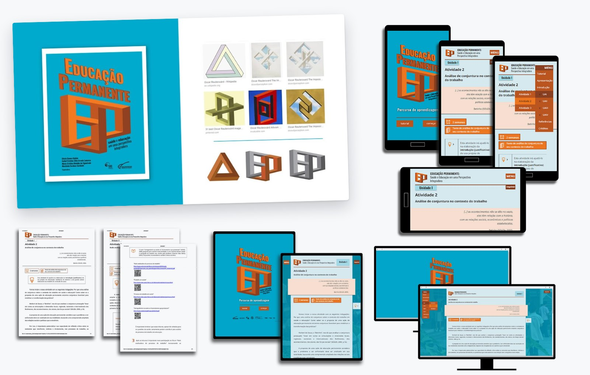<figcaption style="margin: 0; font-family: 'Manrope', sans-serif; font-size: 13px; line-height: 1.4; color: #4A5363"><span class="dm-pt">Curso “Educação Permanente”: estudos para a identidade visual e versões mobile, impressão, tablet e desktop.</span><span class="dm-en">“Educação Permanente” course: visual identity studies and mobile, print, tablet and desktop versions.</span></figcaption></figure><figure style="margin: 0; display: flex; flex-direction: column; gap: 10px">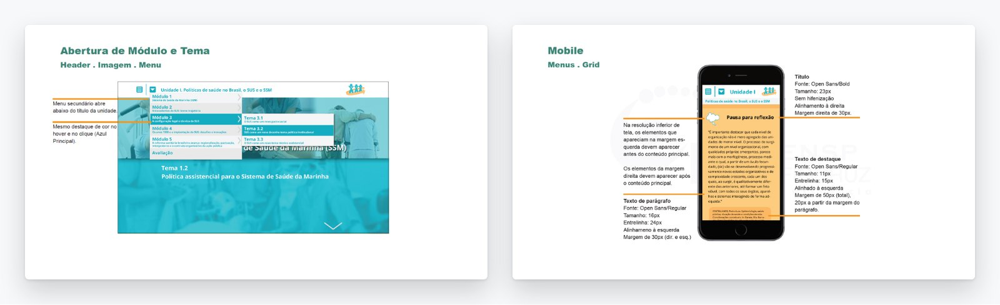<figcaption style="margin: 0; font-family: 'Manrope', sans-serif; font-size: 13px; line-height: 1.4; color: #4A5363"><span class="dm-pt">Especificações para o projeto gráfico digital do curso “Gestão em Saúde”.</span><span class="dm-en">Specs for the digital graphic design of the “Gestão em Saúde” (Health Management) course.</span></figcaption></figure><figure style="margin: 0; display: flex; flex-direction: column; gap: 10px">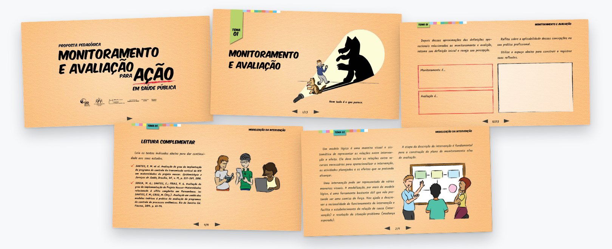<figcaption style="margin: 0; font-family: 'Manrope', sans-serif; font-size: 13px; line-height: 1.4; color: #4A5363"><span class="dm-pt">Material em PDF interativo da proposta pedagógica “Monitoramento e Avaliação para ação em saúde pública”.</span><span class="dm-en">Interactive PDF material for the pedagogical proposal “Monitoramento e Avaliação para ação em saúde pública” (Monitoring and Evaluation for public health action).</span></figcaption></figure></div>
</div>
</section>

<section id="cap-uff" data-chapter="4" style="background: #FFFFFF; color: #11151C; padding: clamp(64px, 8cqi, 128px) clamp(16px, 5cqi, 80px) clamp(64px, 8cqi, 128px) clamp(12px, 3cqi, 40px)">
<p style="margin: 0 0 20px; font-family: 'IBM Plex Mono', monospace; font-size: 12px; letter-spacing: .12em; text-transform: uppercase; color: #4A5363"><span class="dm-pt">2014–2016 · Universidade Federal Fluminense</span><span class="dm-en">2014–2016 · Fluminense Federal University</span></p>
<h2 style="margin: 0 0 28px; font-size: clamp(30px, 4.4cqi, 56px); line-height: 1.08; letter-spacing: -0.025em; font-weight: 800; max-width: 20ch"><span class="dm-pt">Enquanto desenhava na Fiocruz, eu estudava como as organizações funcionam.</span><span class="dm-en">While designing at Fiocruz, I was studying how organizations work.</span></h2>
<div class="dm-split">
<div style="display: flex; flex-direction: column; gap: 20px">
<p style="margin: 0; font-size: 18px; line-height: 1.6; color: #2A303B"><span class="dm-pt">Fiz o ENEM ao final de 2013 e entrei, pelo SISU, em Processos Gerenciais na UFF, um curso novo que levaria minha formação para além do design e das artes. Foram três anos estudando projetos, processos, pessoas, cultura e teorias organizacionais, comunicação empresarial, planos de negócio e práticas de gestão.</span><span class="dm-en">I took Brazil’s national university entrance exam (ENEM) at the end of 2013 and was admitted to the Management Processes program at UFF, a new course that would take my education beyond design and the arts. I spent three years studying projects, processes, people, organizational culture and theory, business communication, business plans and management practices.</span></p>
<p style="margin: 0; font-size: 18px; line-height: 1.6; color: #2A303B"><span class="dm-pt">Me formei com o maior CR da turma e no projeto final apresentei um plano de negócios para lançar um e-commerce de moda.</span><span class="dm-en">I graduated with the highest GPA in my class, and for my final project I presented a business plan to launch a fashion e-commerce.</span></p>
<p style="margin: 0; font-size: 18px; line-height: 1.6; color: #2A303B"><span class="dm-pt">É dessa formação que vem o meu olhar para o contexto organizacional, e o que hoje me permite contribuir além das entregas de design, nas conversas com stakeholders e nas decisões de produto.</span><span class="dm-en">This background is where my eye for the organizational context comes from, and it is what lets me contribute beyond design deliverables today, in conversations with stakeholders and in product decisions.</span></p>
<ul aria-label="{{tx.comp}}" style="list-style: none; margin: 8px 0 0; padding: 0; display: flex; flex-wrap: wrap; gap: 8px; font-size: 13px; font-weight: 600">
<li style="padding: 7px 12px; border-radius: 999px; border: 1px solid #C9D0DC"><span class="dm-pt">Gestão de processos</span><span class="dm-en">Process management</span></li>
<li style="padding: 7px 12px; border-radius: 999px; border: 1px solid #C9D0DC"><span class="dm-pt">Gestão de pessoas</span><span class="dm-en">People management</span></li>
<li style="padding: 7px 12px; border-radius: 999px; border: 1px solid #C9D0DC"><span class="dm-pt">Teorias organizacionais</span><span class="dm-en">Organizational theory</span></li>
<li style="padding: 7px 12px; border-radius: 999px; border: 1px solid #C9D0DC"><span class="dm-pt">Comunicação empresarial</span><span class="dm-en">Business communication</span></li>
<li style="padding: 7px 12px; border-radius: 999px; border: 1px solid #C9D0DC"><span class="dm-pt">Plano de negócios</span><span class="dm-en">Business plan</span></li>
<li style="padding: 7px 12px; border-radius: 999px; border: 1px solid #C9D0DC"><span class="dm-pt">Empreendedorismo</span><span class="dm-en">Entrepreneurship</span></li>
</ul>
</div>
<div style="display: flex; flex-direction: column; gap: 24px">
<figure style="margin: 0; display: flex; flex-direction: column; gap: 10px">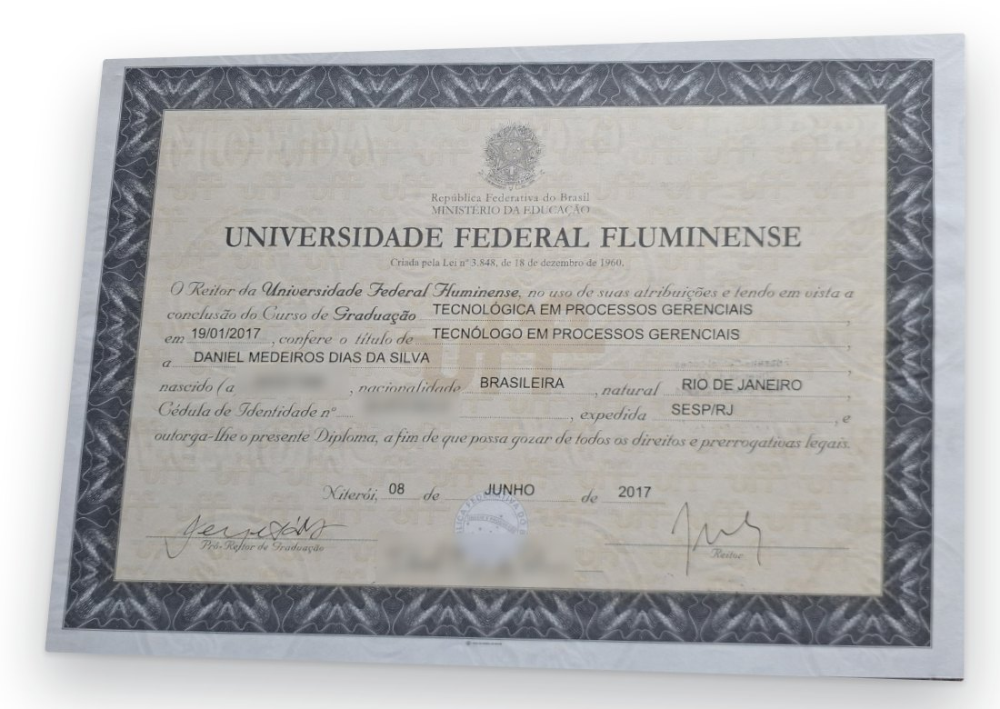<figcaption style="margin: 0; font-family: 'Manrope', sans-serif; font-size: 13px; line-height: 1.4; color: #4A5363"><span class="dm-pt">Diploma de Tecnólogo em Processos Gerenciais, UFF</span><span class="dm-en">Technologist degree in Management Processes, UFF</span></figcaption></figure>
<figure style="margin: 0; display: flex; flex-direction: column; gap: 10px">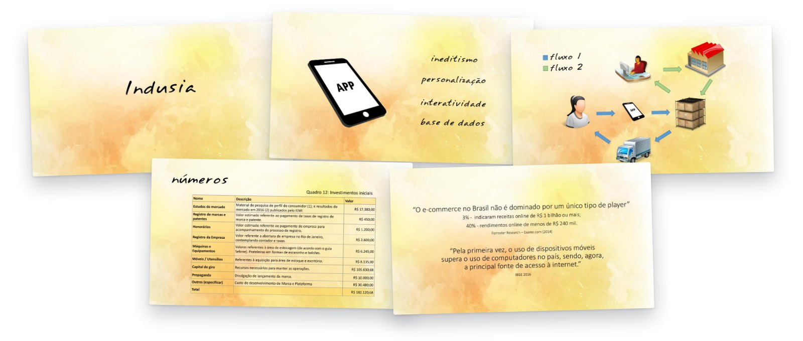<figcaption style="margin: 0; font-family: 'Manrope', sans-serif; font-size: 13px; line-height: 1.4; color: #4A5363"><span class="dm-pt">Projeto final: plano de negócios Indusia, um e-commerce de moda</span><span class="dm-en">Final project: Indusia, a business plan for a fashion e-commerce</span></figcaption></figure>
</div>
</div>
</section>

<section id="cap-web" data-chapter="5" style="background: #F7F8FA; color: #11151C; padding: clamp(64px, 8cqi, 128px) clamp(16px, 5cqi, 80px) clamp(64px, 8cqi, 128px) clamp(12px, 3cqi, 40px)">
<p style="margin: 0 0 20px; font-family: 'IBM Plex Mono', monospace; font-size: 12px; letter-spacing: .12em; text-transform: uppercase; color: #4A5363">2013 · Instituto Infnet</p>
<h2 style="margin: 0 0 28px; font-size: clamp(30px, 4.4cqi, 56px); line-height: 1.08; letter-spacing: -0.025em; font-weight: 800; max-width: 20ch"><span class="dm-pt">E, para chegar à Fiocruz, eu aprendi a escrever a web.</span><span class="dm-en">And, to get to Fiocruz, I learned to write the web.</span></h2>
<div class="dm-split">
<div style="display: flex; flex-direction: column; gap: 20px">
<p style="margin: 0; font-size: 18px; line-height: 1.6; color: #2A303B"><span class="dm-pt">Até então, meu trabalho era quase todo de programação visual: materiais promocionais e grandes formatos. Eu já fazia peças digitais e estava claro que era esse o caminho que deveria tomar para a profissão, mas minha formação em web era elementar.</span><span class="dm-en">Until then, my work was almost entirely visual design: promotional materials and large formats. I was already making digital pieces and it was clear that this was the path my profession should take, but my web skills were basic.</span></p>
<p style="margin: 0; font-size: 18px; line-height: 1.6; color: #2A303B"><span class="dm-pt">Fiz o curso de HTML5, CSS3 e Web Standards no Infnet. Foi essa atualização que me credenciou para a vaga na Escola Nacional de Saúde Pública.</span><span class="dm-en">I took the HTML5, CSS3 and Web Standards course at Infnet. That upskilling is what qualified me for the role at the National School of Public Health.</span></p>
<ul aria-label="{{tx.comp}}" style="list-style: none; margin: 8px 0 0; padding: 0; display: flex; flex-wrap: wrap; gap: 8px; font-family: 'Manrope', sans-serif; font-size: 13px; font-weight: 600">
<li style="padding: 7px 12px; border-radius: 999px; border: 1px solid #C9D0DC">HTML5</li>
<li style="padding: 7px 12px; border-radius: 999px; border: 1px solid #C9D0DC">CSS3</li>
</ul>
</div>
<figure style="margin: 0; display: flex; flex-direction: column; gap: 10px">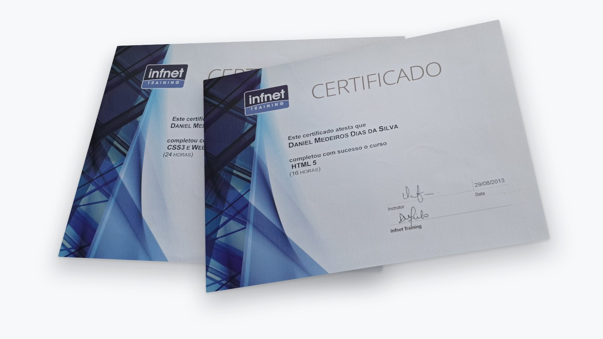<figcaption style="margin: 0; font-family: 'Manrope', sans-serif; font-size: 13px; line-height: 1.4; color: #4A5363"><span class="dm-pt">Certificados de HTML5 e de CSS3 e Web Standards, Infnet, 2013</span><span class="dm-en">HTML5 and CSS3 &amp; Web Standards certificates, Infnet, 2013</span></figcaption></figure>
</div>
</section>

<section id="cap-cinema" data-chapter="6" style="background: #FFFFFF; color: #11151C; padding: clamp(64px, 8cqi, 128px) clamp(16px, 5cqi, 80px) clamp(64px, 8cqi, 128px) clamp(12px, 3cqi, 40px)">
<p style="margin: 0 0 20px; font-family: 'IBM Plex Mono', monospace; font-size: 12px; letter-spacing: .12em; text-transform: uppercase; color: #4A5363">2009–2013 · Kinoplex</p>
<h2 style="margin: 0 0 28px; font-size: clamp(30px, 4.4cqi, 56px); line-height: 1.08; letter-spacing: -0.025em; font-weight: 800; max-width: 20ch"><span class="dm-pt">Antes da web, era o cinema.</span><span class="dm-en">Before the web, it was the movies.</span></h2>
<div class="dm-split">
<div style="display: flex; flex-direction: column; gap: 20px; font-family: 'Libre Caslon Text', serif">
<p style="margin: 0; font-size: 18px; line-height: 1.65; color: #2A303B"><span class="dm-pt">Trabalhei no marketing do Kinoplex (Grupo Severiano Ribeiro), onde criava campanhas para materiais de ações promocionais relacionadas aos filmes e produtos comercializados pela empresa (produção digital e gráfica - pequenos e grandes formatos, incluindo fechamento de arquivos para anúncios semanais em mais de 20 jornais).</span><span class="dm-en">I worked in marketing at Kinoplex (Grupo Severiano Ribeiro), where I created campaigns and promotional materials for the films and products the company sold (digital and print production, small and large formats, including preparing final files for weekly ads in more than 20 newspapers).</span></p>
<p style="margin: 0; font-size: 18px; line-height: 1.65; color: #2A303B"><span class="dm-pt">Também atuei em campanhas de endomarketing e projetos de sinalização.</span><span class="dm-en">I also worked on internal marketing campaigns and signage projects.</span></p>
<p style="margin: 0; font-size: 18px; line-height: 1.65; color: #2A303B"><span class="dm-pt">Nas horas vagas, estudava Roteiro Cinematográfico na Escola de Cinema Darcy Ribeiro (2010–2012). Foi ali que aperfeiçoei a habilidade de storytelling, que seria muito útil mais tarde, em apresentações de projetos e decisões.</span><span class="dm-en">In my spare time, I studied Screenwriting at the Darcy Ribeiro Film School (2010–2012). That is where I honed my storytelling skills, which would prove very useful later when presenting projects and decisions.</span></p>
<ul aria-label="{{tx.comp}}" style="list-style: none; margin: 8px 0 0; padding: 0; display: flex; flex-wrap: wrap; gap: 8px; font-family: 'Manrope', sans-serif; font-size: 13px; font-weight: 600">
<li style="padding: 7px 12px; border-radius: 999px; border: 1px solid #C9D0DC"><span class="dm-pt">Campanhas promocionais</span><span class="dm-en">Promotional campaigns</span></li>
<li style="padding: 7px 12px; border-radius: 999px; border: 1px solid #C9D0DC"><span class="dm-pt">Gestão de prazos</span><span class="dm-en">Deadline management</span></li>
<li style="padding: 7px 12px; border-radius: 999px; border: 1px solid #C9D0DC"><span class="dm-pt">Roteiro e narrativa</span><span class="dm-en">Screenwriting and narrative</span></li>
</ul>
</div>
<div style="display: flex; flex-direction: column; gap: 24px">
<figure style="margin: 0; display: flex; flex-direction: column; gap: 10px">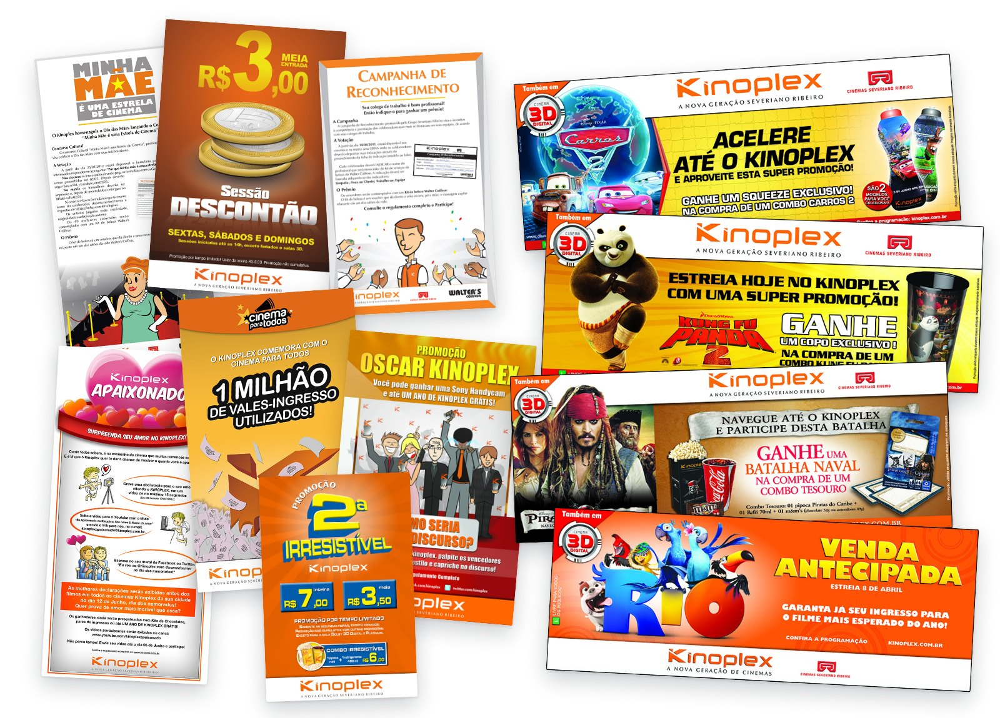<figcaption style="margin: 0; font-family: 'Manrope', sans-serif; font-size: 13px; line-height: 1.4; color: #4A5363"><span class="dm-pt">Campanhas institucionais, endomarketing e anúncios para jornais</span><span class="dm-en">Institutional and internal marketing campaigns, and newspaper ads</span></figcaption></figure>
<figure style="margin: 0; display: flex; flex-direction: column; gap: 10px">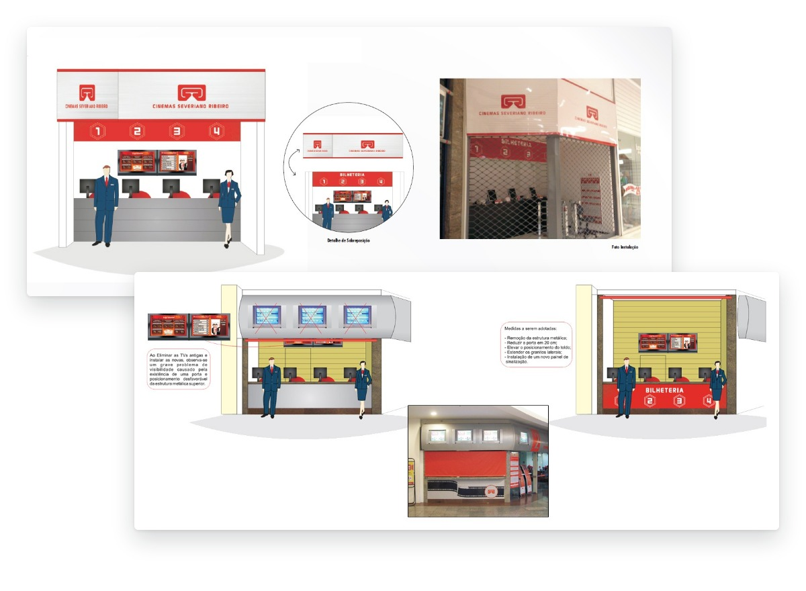<figcaption style="margin: 0; font-family: 'Manrope', sans-serif; font-size: 13px; line-height: 1.4; color: #4A5363"><span class="dm-pt">Sinalização: grandes formatos e mobiliário</span><span class="dm-en">Signage: large formats and fixtures</span></figcaption></figure>
</div>
</div>
</section>

<section id="cap-inicio" data-chapter="7" style="background: #F7F8FA; color: #11151C; padding: clamp(64px, 8cqi, 128px) clamp(16px, 5cqi, 80px) clamp(64px, 8cqi, 112px) clamp(12px, 3cqi, 40px)">
<p style="margin: 0 0 20px; font-family: 'IBM Plex Mono', monospace; font-size: 12px; letter-spacing: .12em; text-transform: uppercase; color: #4A5363"><span class="dm-pt">2004–2009 · O começo</span><span class="dm-en">2004–2009 · The beginning</span></p>
<h2 style="margin: 0 0 28px; font-size: clamp(30px, 4.4cqi, 56px); line-height: 1.08; letter-spacing: -0.025em; font-weight: 800; max-width: 20ch"><span class="dm-pt">E foi em pequenas agências que tudo começou.</span><span class="dm-en">And it all began in small agencies.</span></h2>
<p style="margin: 0; max-width: 760px; font-family: 'Libre Caslon Text', serif; font-size: 18px; line-height: 1.65; color: #2A303B"><span class="dm-pt">Comecei com o curso técnico em Design Gráfico na Estácio (2004–2006) e, ainda durante ele, o primeiro estágio na POR5INCO (2005–2006): identidades visuais, ilustração, produção gráfica e os primeiros sites. Depois vieram a graduação em Desenho Industrial, também na Estácio (2007–2009), com um projeto editorial sobre quadrinhos como trabalho final, e o estágio na Artwork Comunicação (2008–2009), entre identidades, anúncios e impressos de grande formato. As duas eram agências de pequeno porte, com clientes e briefings muito variados: uma ótima escola de versatilidade para quem estava começando.</span><span class="dm-en">I started with a technical course in Graphic Design at Estácio (2004–2006) and, while still in it, my first internship at POR5INCO (2005–2006): visual identities, illustration, print production and my first websites. Then came my degree in Industrial Design, also at Estácio (2007–2009), with an editorial project about comics as my final work, and an internship at Artwork Comunicação (2008–2009), working on identities, ads and large-format print. Both were small agencies with very varied clients and briefs: a great school of versatility for someone just starting out.</span></p>
<ul aria-label="{{tx.comp}}" style="list-style: none; margin: 28px 0 0; padding: 0; display: flex; flex-wrap: wrap; gap: 8px; font-family: 'Manrope', sans-serif; font-size: 13px; font-weight: 600">
<li style="padding: 7px 12px; border-radius: 999px; border: 1px solid #C9D0DC"><span class="dm-pt">Produção gráfica</span><span class="dm-en">Print production</span></li>
<li style="padding: 7px 12px; border-radius: 999px; border: 1px solid #C9D0DC"><span class="dm-pt">Grandes formatos</span><span class="dm-en">Large formats</span></li>
<li style="padding: 7px 12px; border-radius: 999px; border: 1px solid #C9D0DC"><span class="dm-pt">Design gráfico</span><span class="dm-en">Graphic design</span></li>
</ul>
<div style="margin-top: 80px; display: flex; flex-direction: column; gap: 28px">
<div class="dm-backrow" style="display: flex; justify-content: flex-end">
<a href="#inicio" class="dm-backbtn" style="display: inline-flex; align-items: center; min-height: 44px; padding: 0 22px; border-radius: 999px; background: #11151C; color: #FFFFFF; text-decoration: none; font-family: 'Manrope', sans-serif; font-weight: 700; font-size: 15px"><span class="dm-pt">Voltar ao presente ↑</span><span class="dm-en">Back to the present ↑</span></a>
</div>
<footer class="dm-foot" style="display: flex; flex-wrap: wrap; justify-content: space-between; gap: 12px; font-size: 14px; color: #4A5363; border-top: 1px solid #DDE2EA; padding-top: 24px; font-family: 'Manrope', sans-serif">
<span style="padding: 10px 0">Daniel Medeiros · São Paulo, SP<br><span style="font-size: 12px; color: #4A5363"><span class="dm-pt">Conteúdo produzido com auxílio de Inteligência Artificial.</span><span class="dm-en">Content created with the help of Artificial Intelligence.</span></span></span>
<span style="display: flex; flex-wrap: wrap; gap: 4px 24px"><a href="mailto:dan.sva@gmail.com" style="font-weight: 700; color: #2747C9; text-decoration: none; padding: 10px 0">dan.sva@gmail.com</a><a href="https://www.linkedin.com/in/daniel-medeiros-dds" target="_blank" rel="noopener noreferrer" style="font-weight: 700; color: #2747C9; text-decoration: none; padding: 10px 0">LinkedIn</a></span>
</footer>
</div>
</section>

</main>
</div>
<nav aria-label="{{tx.main}}" class="dm-bnav">
<a href="#inicio" class="dm-bnavlink" aria-current="page" style="color: #2747C9; font-weight: 800"><svg aria-hidden="true" width="22" height="22" viewBox="0 0 24 24" fill="none" stroke="currentColor" stroke-width="1.8" stroke-linecap="round" stroke-linejoin="round"><circle cx="6" cy="19" r="2"></circle><circle cx="18" cy="5" r="2"></circle><path d="M8 19h8.5a3.5 3.5 0 0 0 0-7h-9a3.5 3.5 0 0 1 0-7H16"></path></svg><span><span class="dm-pt">Jornada</span><span class="dm-en">Journey</span></span></a>
<a href="{{links.bio}}" class="dm-bnavlink" style="color: #4A5363; font-weight: 600"><svg aria-hidden="true" width="22" height="22" viewBox="0 0 24 24" fill="none" stroke="currentColor" stroke-width="1.8" stroke-linecap="round" stroke-linejoin="round"><circle cx="12" cy="8" r="4"></circle><path d="M4 21c0-4 3.6-6 8-6s8 2 8 6"></path></svg><span><span class="dm-pt">Biografia</span><span class="dm-en">Biography</span></span></a>
<a href="{{links.exp}}" class="dm-bnavlink" style="color: #4A5363; font-weight: 600"><svg aria-hidden="true" width="22" height="22" viewBox="0 0 24 24" fill="none" stroke="currentColor" stroke-width="1.8" stroke-linecap="round" stroke-linejoin="round"><rect x="3" y="7" width="18" height="13" rx="2"></rect><path d="M8 7V5a2 2 0 0 1 2-2h4a2 2 0 0 1 2 2v2"></path><path d="M3 13h18"></path></svg><span><span class="dm-pt">Experiência</span><span class="dm-en">Experience</span></span></a>
<a href="{{links.form}}" class="dm-bnavlink" style="color: #4A5363; font-weight: 600"><svg aria-hidden="true" width="22" height="22" viewBox="0 0 24 24" fill="none" stroke="currentColor" stroke-width="1.8" stroke-linecap="round" stroke-linejoin="round"><path d="M2 9l10-5 10 5-10 5z"></path><path d="M6 11v5c0 1.5 2.7 3 6 3s6-1.5 6-3v-5"></path></svg><span><span class="dm-pt">Formação</span><span class="dm-en">Education</span></span></a>
</nav>
</div>
</script>
<script src="js/runtime.js"></script>
<script src="js/home.js"></script>
</body>
</html>
